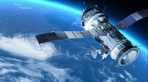

|

Uydu Nedir?
Uydular, gezegenlerin ya da daha büyük gök cisimlerinin etrafında dönen daha küçük gök cisimleridir. Bu uydular, gezegenin kütle çekim kuvveti sayesinde
yörüngede tutulur. Bazı uydular doğal olarak oluşmuştur, bazıları ise insanlar tarafından uzaya gönderilen yapay uydulardır. Doğal uydulara örnek olarak
Ay, yapay uydulara örnek olarak ise uydu iletişimi ve gözlem amacıyla kullanılan teknolojik cihazlar verilebilir.
Doğal uydular, gezegenlerle birlikte Güneş Sistemi’nin oluşumu sırasında meydana gelmiştir. Kimi zaman bir gezegenin çevresindeki gaz ve toz bulutundan
oluşurlar, kimi zaman da başka bir gök cisminin çekim etkisiyle yakalanırlar. Uyduların büyüklükleri oldukça farklıdır. Bazıları küçük bir dağ
büyüklüğündeyken, bazıları gezegen boyutuna yaklaşır. Örneğin Jüpiter’in uydusu Ganymede, Merkür gezegeninden bile daha büyüktür.
Güneş Sistemi’nde neredeyse her gezegenin uydusu vardır. Merkür ve Venüs dışında tüm gezegenler en az bir uyduya sahiptir. Dünya’nın bir uydusu vardır:
Ay. Ay, Dünya’nın doğal uydusu olarak gelgit olaylarına neden olur, gece gökyüzünü aydınlatır ve Dünya’nın dönüş dengesine katkı sağlar. Mars’ın ise iki
küçük uydusu bulunur: Phobos ve Deimos. Bu uydular düzensiz şekillidir ve büyük olasılıkla asteroit kökenlidir.
Gaz devleri olan Jüpiter, Satürn, Uranüs ve Neptün’ün onlarca hatta yüzlerce uydusu vardır. Jüpiter’in uyduları arasında Io, Europa, Ganymede ve Callisto
öne çıkar. Özellikle Europa, yüzeyinin altında okyanus barındırdığı düşünüldüğü için bilim insanlarının ilgisini çeker. Satürn’ün en büyük uydusu Titan,
kalın atmosferi ve sıvı metan gölleriyle dikkat çeker; Dünya dışında atmosferi olan nadir uydulardan biridir.
Uyduların yalnızca gezegenleri değil, bazen cüce gezegenleri de çevreleyebildiği bilinir. Örneğin Plüton’un en büyük uydusu Charon, Plüton’a o kadar
yakındır ki, ikisi birbirinin etrafında adeta ortak bir denge noktasında döner.
Günümüzde insanlar tarafından uzaya gönderilen yapay uydular da büyük önem taşır. Bu uydular, iletişim, hava durumu tahminleri, navigasyon, askeri gözlem
ve bilimsel araştırmalar gibi birçok alanda kullanılır. Dünya’nın etrafında şu anda binlerce aktif ve pasif yapay uydu bulunmaktadır.
Sonuç olarak uydular, hem doğal hem de yapay biçimleriyle evrenin dengesinde ve insanlığın teknolojik gelişiminde büyük rol oynar. Doğal uydular
gezegenlerin yapısını ve evrimini anlamamıza yardımcı olurken, yapay uydular modern yaşamın vazgeçilmez bir parçası haline gelmiştir.
|